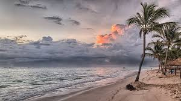

A city is a large human settlement.[4][5] Cities generally have extensive systems for housing,
transportation, sanitation, utilities, land use, and communication. Their density facilitates
interaction between people, government organisations and businesses, sometimes benefiting
different parties in the process.
 India (official name: the Republic of India;[19] Hindi: Bhārat Gaṇarājya) is a country in South Asia. It is the seventh-largest country by area
the second-most populous country, and the most populous democracy in the world. Bounded by the Indian Ocean on the south, the Arabian Sea on
the southwest, and the Bay of Bengal on the southeast, it shares land borders with Pakistan to the west;[e] China, Nepal, and Bhutan to the north; and Bangladesh and Myanmar to the east. In the Indian Ocean ,
it shares land borders with Pakistan to the west;[e] China, Nepal, and Bhutan to the north; and Bangladesh and Myanmar to the east. In the Indian Ocean , India is in the vicinity of Sri Lanka and the Maldives;
its Andaman and Nicobar Islands share a maritime border with Thailand and Indonesia.
India (official name: the Republic of India;[19] Hindi: Bhārat Gaṇarājya) is a country in South Asia. It is the seventh-largest country by area
the second-most populous country, and the most populous democracy in the world. Bounded by the Indian Ocean on the south, the Arabian Sea on
the southwest, and the Bay of Bengal on the southeast, it shares land borders with Pakistan to the west;[e] China, Nepal, and Bhutan to the north; and Bangladesh and Myanmar to the east. In the Indian Ocean ,
it shares land borders with Pakistan to the west;[e] China, Nepal, and Bhutan to the north; and Bangladesh and Myanmar to the east. In the Indian Ocean , India is in the vicinity of Sri Lanka and the Maldives;
its Andaman and Nicobar Islands share a maritime border with Thailand and Indonesia.
 London is the capital of and largest city in England and the United Kingdom, with the largest municipal
population in the European Union.[7][8] Standing on the River Thames in the south-east of England,
at the head of its 50-mile (80 km) estuary leading to the North Sea, London has been a major settlement
for two millennia. Londinium was founded by the Romans.[9] The City of London, London's ancient core −
an area of just 1.12 square miles (2.9 km2) and colloquially known as the Square Mile − retains boundaries
that follow closely its medieval limits.[10][11][12][13][14][note 1] The City of Westminster is also an Inner
London borough holding city status. Greater London is governed by the Mayor of London and the London Assembly.
London is the capital of and largest city in England and the United Kingdom, with the largest municipal
population in the European Union.[7][8] Standing on the River Thames in the south-east of England,
at the head of its 50-mile (80 km) estuary leading to the North Sea, London has been a major settlement
for two millennia. Londinium was founded by the Romans.[9] The City of London, London's ancient core −
an area of just 1.12 square miles (2.9 km2) and colloquially known as the Square Mile − retains boundaries
that follow closely its medieval limits.[10][11][12][13][14][note 1] The City of Westminster is also an Inner
London borough holding city status. Greater London is governed by the Mayor of London and the London Assembly.